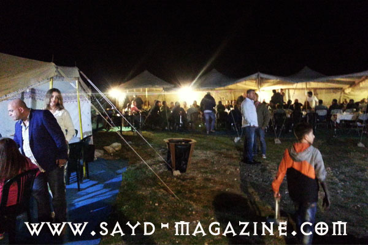
أقامت مجموعة الصيادين Trigger Team مساء الجمعة 10 حزيران 2016 افطارا في Zoummar Village عنايا – مارشربل، تحت الخيام في الطبيعة، بحضور شخصيات فنيّة وأمنيّة ورجال أعمال ومجلة " صيد " . وقد وقّع اللقاء الفنانين معين شريف وهادي خليل بغناء مدهش بمشاركة الحاضرين الذين رقصوا على ايقاع اغاني الدبكة اللبنانية. تميّز الافطار ببصمات الـ Top Chef دوواد حنا الذي قدم مائدة شهية جدا تضمنت لحم الغزال وطيور الفيزون. وفي نهاية اللقاء قطع رئيس Trigger Team خالد بو يونس قالب حلوى مع اعضاء الفريق احتفاء بالحاضرين وسط صياحات بإسم الفريق اطلقها الاعضاء والحاضرون . ومن الجدير بالذكر ان Trigger Team هو من المجموعات التي تعمل جنبا الى جنب مع "مركز الشرق الاوسط للصيد المستدام " ومجلة " صيد" وجمعية حماية الطبيعة في لبنان " لحماية هواية الصيد عبر ارساء مفهوم الصيد المستدام والابتعاد عن الصيد الجائر وصيد الربيع الذي يمارسه القواصون والذي ادى الى تناقص كبير في اعداد الطيور في لبنان. واليوم يتحضر هذا الفريق عبر مناطق صيده وعلاقاته الرفيعة المستوى الى انشاء مناطق صيد مسؤول تكفل عدم تدمير الهواية وانعاشها من جديد. هذه بعض الصور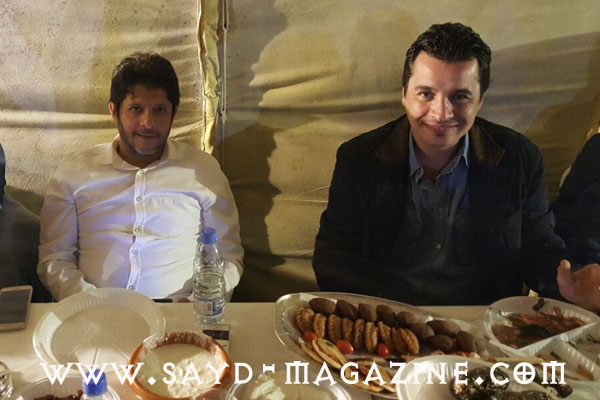
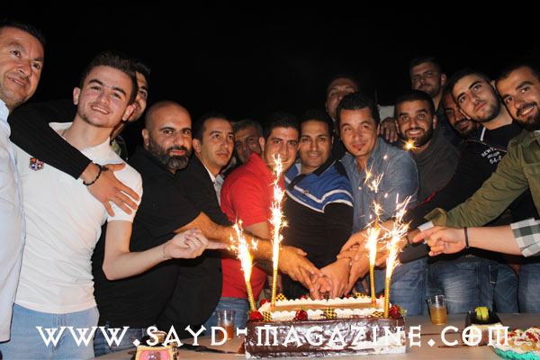
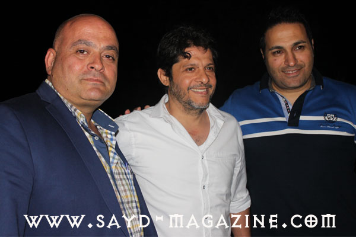
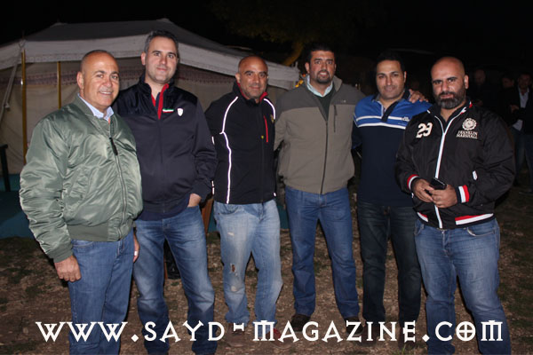
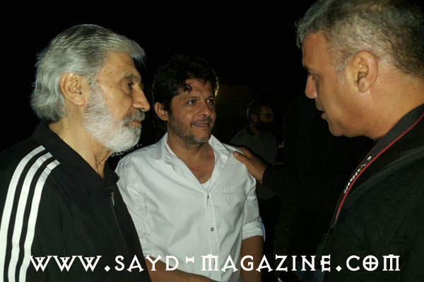
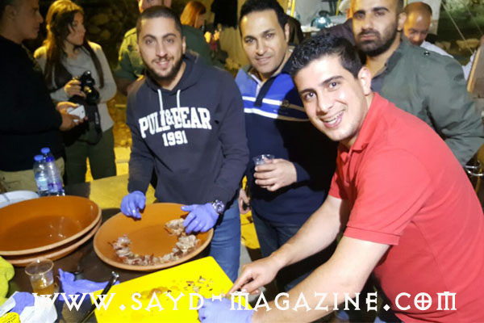
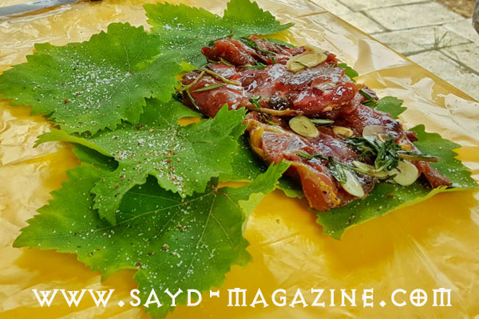
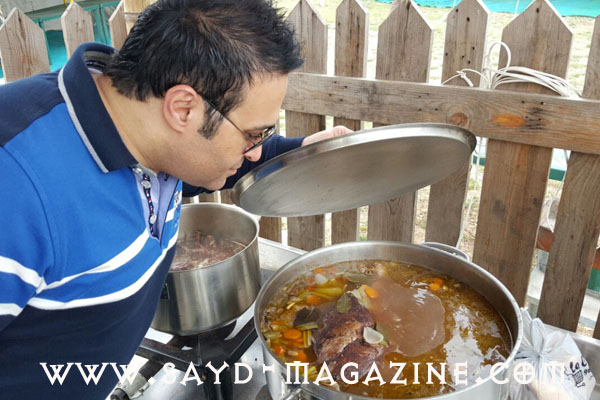
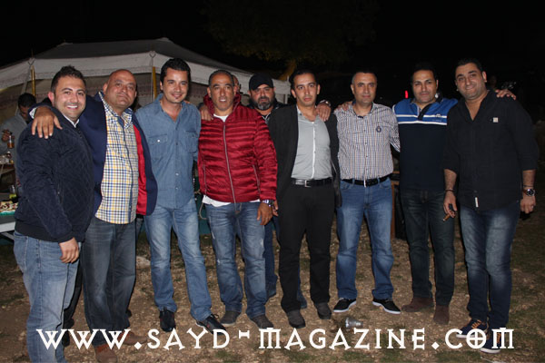
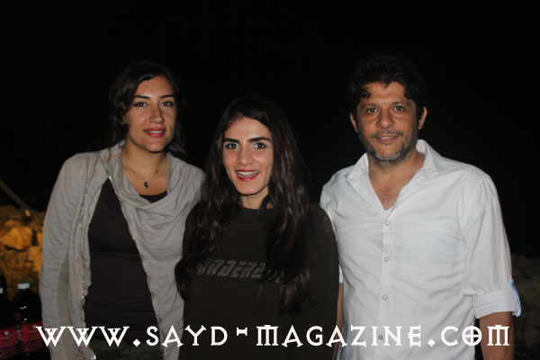
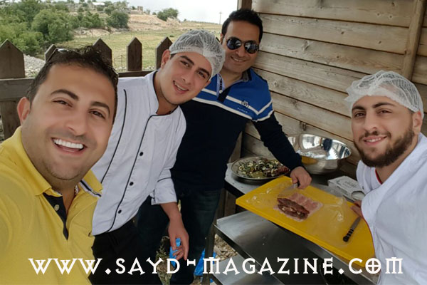
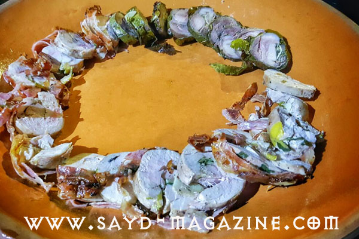
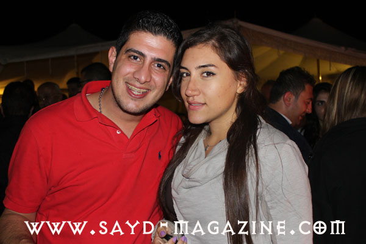
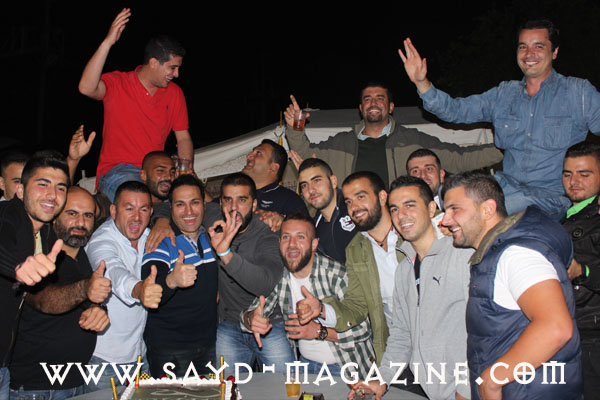
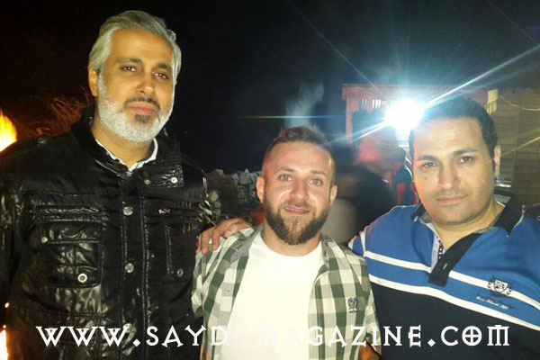
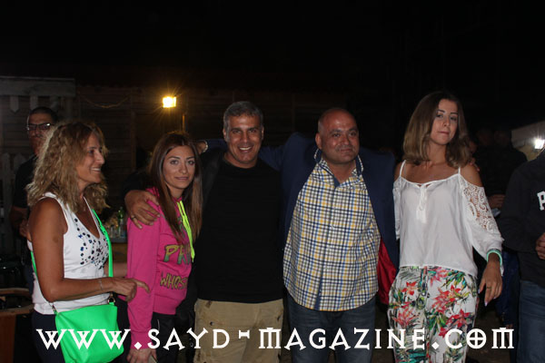
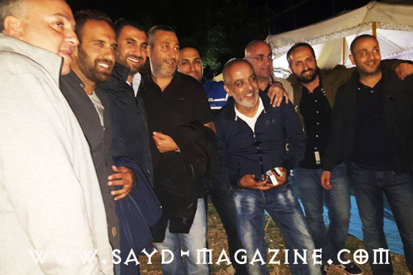